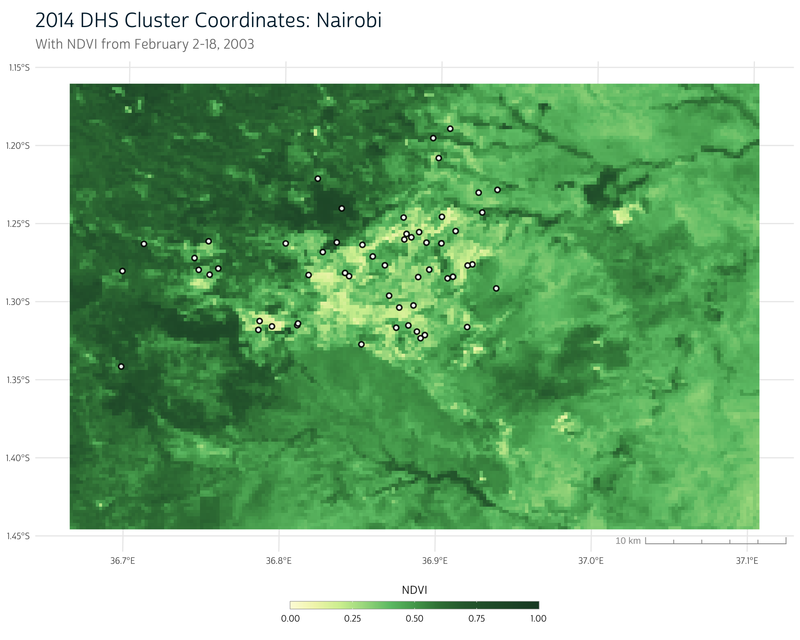
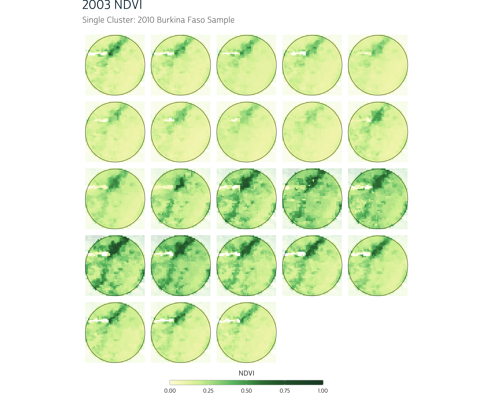
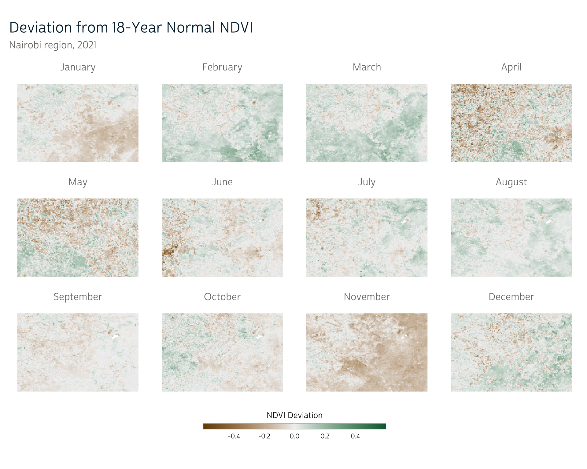
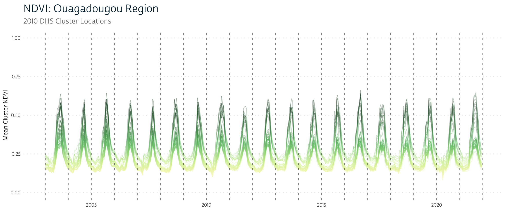
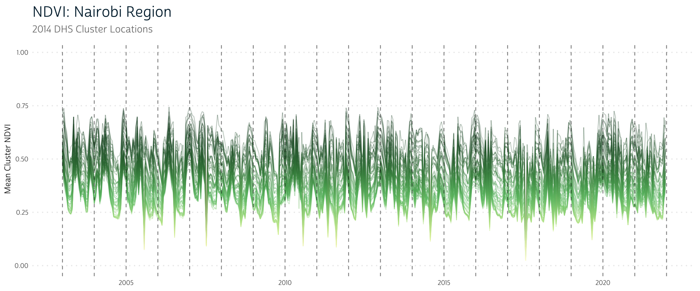

Previously, we showed how to load NDVI data for two time points in Kenya using NASA’s Earthdata Search interface. If you’re new to NDVI, we suggest you go ahead and take a look at our introductory post as well as our NDVI data loading post before continuing.
In this post, we’ll use two NDVI time series to demonstrate some of the considerations that emerge when aggregating and processing NDVI raster data in the context of population health research. We need to conduct many of the same aggregation steps for our NDVI data as we did for previous data sources, like CHIRPS and CHIRTS. However, as with any new data source, the decisions we make about how to do so will vary when working with NDVI.
To highlight some of the features of NDVI data, we’ll load NDVI time series from two capitals with different climates: Nairobi, Kenya and Ouagadougou, Burkina Faso. We’ll use a familiar workflow to build buffers around the DHS cluster points in these regions and will extract NDVI time series for each. Once we have these time series, we’ll use them to explore how climate and seasonality may play a role in the way we aggregate NDVI data.
As always, we’ll start by loading some of the packages used in the post:
Data: Two capital regions
We’ll be using NDVI data from the MOD13Q1 MODIS product, which we introduced in our last post. However, instead of working with just 2 time points, this time we’ll work with an extended time series from 2003-2021. Because of this long range, we’ve restricted our spatial regions of interest to reduce file size. We’ll work with the regions around Nairobi, Kenya and Ouagadougou, Burkina Faso.
Obtaining data from NASA
To simplify things, we’ve gone ahead and prepared these NDVI time series as we described in our previous post and saved them as stand-alone .tif files. We won’t show the step-by-step process for producing these files, but they track closely with the methods shown in our previous post, so take a look there if you need a refresher on how to ingest MODIS NDVI data into R.
Since our data are stored in .tif files, we can load them directly with terra:
DHS cluster coordinates
In this post, we’ll be aggregating our NDVI raster data to the DHS cluster level as we’ve demonstrated before. To do so, we’ll need the cluster coordinate data provided by the DHS. We can use sf to load the DHS cluster coordinates once we’ve downloaded the shapefiles provided by the DHS Program.
If you need a refresher on where you can access cluster coordinate data, see our CHIRPS post.
Since we’re only working with the two capital regions for this demonstration, we’ll filter our cluster coordinate data to remove records for clusters that are outside each region of interest.
# Filter Kenya cluster locations to those in the Nairobi region
nairobi_gps <- ke_gps |>
filter(DHSREGNA == "Nairobi")For Burkina Faso, we’ll also need to remove some clusters that do not have valid coordinate locations, so we’ll filter out cases with (0, 0) coordinates:
# Filter Burkina Faso cluster locations to those in the Ouagadougou region
ouaga_gps <- bf_gps |>
filter(
!(LATNUM == 0 & LONGNUM == 0), # Remove missing coordinate locations
DHSREGNA == "Centre"
)Even though we’re working with urban areas, our DHS clusters are still located across a range of NDVI values. Here we see our cluster point locations overlaid on the NDVI raster for the region:
Show plot code
# We have converted our NDVI palette from the previous post to a scale function
# for easier use in this post
ndvi_pal <- function() {
list(
pal = c(
"#fdfbdc",
"#f1f4b7",
"#d3ef9f",
"#a5da8d",
"#6cc275",
"#51a55b",
"#397e43",
"#2d673a",
"#1d472e"
),
values = c(0, 0.1, 0.2, 0.3, 0.4, 0.5, 0.6, 0.7, 1)
)
}
scale_fill_ndvi <- function(pal = ndvi_pal(), ...) {
scale_fill_gradientn(colors = pal$pal, values = pal$values, ...)
}
scale_color_ndvi <- function(pal = ndvi_pal(), ...) {
scale_color_gradientn(colors = pal$pal, values = pal$values, ...)
}
ggplot() +
layer_spatial(ndvi_nairobi[[3]]) +
# layer_spatial(nairobi_gps, color = "white", alpha = 1) +
layer_spatial(nairobi_gps, color = "black", fill = "white", alpha = 0.9, shape = 21, size = 1.5, stroke = 1) +
scale_fill_ndvi(limits = c(0, 1), na.value = "transparent") +
labs(
title = "2014 DHS Cluster Coordinates: Nairobi",
subtitle = "With NDVI from February 2-18, 2003",
fill = "NDVI"
) +
theme_dhs_map()
Buffer cluster coordinates
As we’ve shown before, the next step is to create a buffer around each cluster point location to get a polygon containing the general region around each cluster.
We’ll first project our cluster points and then create a buffer with st_buffer(). Then, we’ll project our buffered points to the same coordinate reference system as our NDVI data to prepare to aggregate our NDVI data to our newly-created buffer regions.
# Project and buffer Nairobi clusters
nairobi_gps_buff <- nairobi_gps |>
st_transform(crs = 32637) |> # UTM Zone 37N
st_buffer(dist = 5000) |>
st_transform(crs = crs(ndvi_nairobi))
# Project and buffer Ouagadougou clusters
ouaga_gps_buff <- ouaga_gps |>
st_transform(crs = 32630) |> # UTM Zone 30N
st_buffer(dist = 5000) |>
st_transform(crs = crs(ndvi_ouaga))NDVI spatial aggregation
At this point, we have everything we need to produce a single time series for each cluster region.
Basic approach
Previously, we introduced terra’s extract(), which will allow us to use the NDVI raster along with our buffered cluster polygons to spatially aggregate the NDVI pixels within each cluster region. For instance, to extract the average NDVI value within each buffer, we could use fun = mean as shown below (note that we’ve set na.rm = TRUE to exclude missing values from the calculation):
# Extract mean NDVI in each cluster buffer region:
ke_mean_ndvi <- extract(
ndvi_nairobi,
nairobi_gps_buff,
weights = TRUE,
fun = mean,
na.rm = TRUE # Exclude missing raster values in average
)
ke_mean_ndvi
#> ID "250m 16 days NDVI" "250m 16 days NDVI" "250m 16 days NDVI"
#> 1 1 0.6577829 0.6587233 0.5955906
#> 2 2 0.6517902 0.6471524 0.5866545
#> 3 3 0.6726900 0.6747525 0.6094023
#> 4 4 0.7095437 0.7192108 0.6485346
....This gives us a tabular record where each row corresponds to a cluster and each column to the mean NDVI value in that cluster buffer region for a particular time point.
However, our interest in NDVI is primarily as a measure for agricultural production, and some areas aren’t intended to be used for agriculture (like water bodies or dense urban environments). Including these low-NDVI pixels in our aggregation serves to reduce the mean NDVI value in a cluster, even if the available agricultural land in that cluster is highly productive.
If we want an estimate of the agricultural productivity of the vegetated land in an area, we likely want to remove very low NDVI values (which typically represent impervious surfaces and water) from our calculation. Below, we’ll detail a few approaches that could accomplish this goal.
Idea 1: Mask out sub-zero NDVI values
Recall that NDVI can range from -1 to 1, where values near and below 0 typically represent water or bare soil. Some of these low NDVI values in our raster are already treated as NA. Using our approach from above (with na.rm = TRUE), these are removed from consideration during aggregation. However, pixels that border these regions may still have low NDVI values. We can set these to NA manually using terra’s classify().
classify() takes an input matrix that defines the range of values in our raster that should be reclassified. In this case, we create a matrix called subzero_to_na that defines the range of values from -Inf to 0. The third value in this matrix indicates the output value for all raster cells that fall within this range.
We can use this matrix with our NDVI raster to reclassify sub-zero NDVI values to NA.
ndvi_nairobi <- classify(ndvi_nairobi, subzero_to_na)Now, as long as we continue to use na.rm = TRUE in our call to extract(), we’ll automatically ignore these low NDVI values.
ke_mean_ndvi <- extract(
ndvi_nairobi,
nairobi_gps_buff,
weights = TRUE,
fun = mean,
na.rm = TRUE # Exclude missing raster values in average
)Idea 2: Use maximum NDVI
Crops are often grown in localized areas, so even if a large portion of a cluster region contains low vegetation values, the crop-producing regions may still be thriving.
For instance, let’s take an example cluster from the Ouagadougou area. If we plot the NDVI values in its vicinity over the course of the year, we notice a few obvious patterns.
Show plot code
library(patchwork)
x <- ouaga_gps_buff[8, ]
ndvi_clust <- crop(ndvi_ouaga, x)
panels <- purrr::map(
1:23,
function(i) {
ggplot() +
layer_spatial(mask(ndvi_clust[[i]], x, inverse = TRUE), alpha = 0.2) +
layer_spatial(mask(ndvi_clust[[i]], x)) +
layer_spatial(x, fill = NA, color = "black") +
scale_fill_ndvi(
limits = c(0, 1),
na.value = "transparent"
) +
labs(fill = "NDVI")
}
)
purrr::reduce(panels, `+`) +
plot_annotation(title = "2003 NDVI", subtitle = "Single Cluster: 2010 Burkina Faso Sample") +
plot_layout(guides = "collect") &
theme_void() +
theme_dhs_map() +
theme(
legend.position = "bottom",
legend.title.position = "top",
legend.title = element_text(size = 10, hjust = 0.5),
legend.key.height = unit(7, "points"),
legend.key.width = unit(45, "points"),
legend.ticks = element_line(color = "white", linewidth = 0.2),
legend.ticks.length = unit(1, "points"),
legend.frame = element_rect(
fill = NA,
color = "#999999",
linewidth = 0.2
),
plot.title = element_text(
hjust = 0,
size = 18,
color = "#00263A", # IPUMS navy
margin = margin(b = 7)
),
plot.subtitle = element_text(
size = 12,
hjust = 0,
color = "#00000099",
margin = margin(b = 10)
),
plot.caption = element_text(
size = 10,
hjust = 1,
color = "#00000099",
margin = margin(t = 5)
),
text = element_text(family = "cabrito", size = 10),
)
First, we notice that the overall region has a period of higher vegetation in the middle of the year. We also notice that there is a small area in the north of the cluster region that has consistently higher vegetation than its surrounding area throughout the year, even in times with less vegetation overall.
This could be a result of water proximity (we notice that some missing values appear near the green patch, which could have been removed because they represent a water source), but it could also be because of human interaction, like irrigation.
This human element is an important feature of NDVI that distinguishes it from other climate metrics, like precipitation and temperature. Vegetation is more directly influenced by human behavior than these other sources.
Whether this particular pattern is prompted primarily by physical geography (a nearby water source) or human behavior (irrigation), it does serve as an example of why calculating a mean NDVI value may not reflect the lived experience on the ground. If most of an area’s crops are grown in a particular area, the most critical portion of a cluster region may have very high vegetation values, even if the rest of the cluster does not.
One option to incorporate this into our data processing would be to use the maximum NDVI value as this cluster’s value rather than the mean. This is easily done in R: we just need to change our aggregation function from fun = mean to fun = max:
This gives us a similarly formatted output, but each value now represents the maximum NDVI pixel value in a given cluster (row) for a given time point (column):
bf_max_ndvi
#> ID "250m 16 days NDVI" "250m 16 days NDVI" "250m 16 days NDVI"
#> 1 1 0.4393 0.3828 0.3759
#> 2 2 0.4320 0.4590 0.3903
#> 3 3 0.6664 0.4498 0.4392
#> 4 4 0.4393 0.3828 0.3759
....Comparing maximum and mean aggregation
Using the maximum cluster region NDVI value (rather than the mean) will obviously provide a different NDVI estimate for each cluster, but how much of a difference does this decision make overall?
First, let’s extract the mean NDVI values for our Ouagadougou clusters as we did earlier for Nairobi:
bf_mean_ndvi <- extract(
ndvi_ouaga,
ouaga_gps_buff,
weights = TRUE,
fun = mean,
na.rm = TRUE
)Now we can compare our maximum and mean NDVI values for each cluster. In the plot below, each line corresponds to a DHS cluster, with the lower points showing the mean NDVI value for that cluster and the higher points representing the max NDVI value for that cluster (for a single date):
Show plot code
colnames(bf_max_ndvi) <- c("ID", as.character(time(ndvi_ouaga)))
colnames(bf_mean_ndvi) <- c("ID", as.character(time(ndvi_ouaga)))
bf_max_ndvi <- bf_max_ndvi |>
tidyr::pivot_longer(-ID) |>
mutate(name = as.Date(name)) |>
rename(time = name)
bf_mean_ndvi <- bf_mean_ndvi |>
tidyr::pivot_longer(-ID) |>
mutate(name = as.Date(name)) |>
rename(time = name)
full_join(bf_max_ndvi, bf_mean_ndvi, by = c("ID", "time")) |>
mutate(d = value.x - value.y) |>
filter(time == "2003-01-01") |>
ggplot() +
geom_segment(aes(x = reorder(ID, d), y = value.x, yend = value.y), linewidth = 0.5, color = "gray20", alpha = 0.8) +
geom_point(aes(x = reorder(ID, d), y = value.x, fill = value.x), size = 2.5, shape = 21) +
geom_point(aes(x = reorder(ID, d), y = value.y, fill = value.y), size = 2.5, shape = 21) +
annotate("segment", x = 33.6, xend = 27.8, y = 0.68, yend = 0.88, color = "gray80") +
annotate("segment", x = 19.2, xend = 24, y = 0.45, yend = 0.88, color = "gray80") +
geom_label(
x = 26,
y = 0.89,
label = "Cluster Max NDVI",
color = "gray60",
label.size = 0,
label.padding = unit(0.35, "lines"),
label.r = unit(0.5, "lines"),
alpha = 0.3,
size = 4,
family = "cabrito"
) +
annotate("segment", x = 9, xend = 7.05, y = 0.06, yend = 0.18, color = "gray80") +
annotate("segment", x = 14.7, xend = 20.85, y = 0.06, yend = 0.135, color = "gray80") +
geom_label(
x = 12,
y = 0.04,
label = "Cluster Mean NDVI",
color = "gray60",
label.size = 0,
label.padding = unit(0.35, "lines"),
label.r = unit(0.5, "lines"),
alpha = 0.3,
size = 4,
family = "cabrito"
) +
scale_fill_ndvi(limits = c(0, 1), guide = "none") +
lims(y = c(0, 1)) +
labs(
title = "Difference in Maximum and Mean NDVI",
subtitle = "2010 DHS Clusters: Ouagadougou Region",
x = "DHS cluster (ordered by difference)",
y = "NDVI"
) +
theme(
axis.text.x = element_blank(),
panel.grid.major.x = element_blank(),
panel.grid.minor.y = element_blank()
)
Across clusters, we see some variability in how much of a difference the aggregation function makes. That is, some clusters have a mean that closely resembles the cluster maximum, while other clusters show more of a difference. This could be an indication of
We can also see that there is much more variability in maximum NDVI values than mean NDVI values, which may help draw out relationships between NDVI and other health outcomes. When measuring with mean NDVI, all the clusters had nearly the same NDVI value!
Remember that this example uses clusters exclusively from the capital region. Because of the overlap in their buffer areas, we would expect their NDVI values (especially their mean values) to be highly correlated.
If we included clusters from across the country, we’d likely see far more variability in these results, even for mean values.
Of course, this approach also has its pitfalls. For instance, a single pixel with an outlying NDVI value may inflate the overall aggregated NDVI value for an entire cluster region.
Idea 2.5: Quantile aggregation
As an alternative, it’s also possible to get the NDVI value at a certain percentile of a given cluster’s pixel values. That is, we could get the NDVI value that represents the 95th percentile of all NDVI values in a given cluster. In R, we can do this with the quantile() function.
Recall that extract() allows us to provide an anonymous function to its fun argument. We can use quantile() with the 0.95 probability level (for instance) to get the 95th percentile NDVI value for each cluster:
Calculating the quantile for a cluster may mitigate the effect of outliers, but because NDVI pixels are correlated with one another (that is, pixels with high NDVI values will disproportionately be located next to other pixels with high values), it’s not unusual to observe several pixels near the maximum value in a cluster. In these cases, a quantile approach may not produce a significant difference from using the maximum.
Idea 3: A relative measure
Because NDVI is an index, its values don’t have any intrinsic units (what does it really mean when we see an NDVI value of 0.6, for example?). This means that NDVI is often easier to interpret when considered relative to past NDVI values in a given location. Instead of aggregating NDVI directly, we can compare each pixel to its prior values over the course of many years. In climate science, these long-run comparisons are called normals.
To demonstrate, imagine we wanted to calculate the deviation from normal NDVI we observed in 2021. First, we’ll split our final year of data (2021) from the rest of the time series:
Remember that our NDVI data are recorded on 16-day intervals; we can simplify by calculating the mean monthly NDVI for 2021 and for the rest of the series:
We first introduced terra’s tapp() in our CHIRTS post.
Now our 2021 data and our comparison data are both measured at the monthly level. We can simply subtract them to get the monthly deviation of 2021’s NDVI values from the long-run normal NDVI for each pixel:
ndvi_dev <- ndvi_nairobi_2021 - ndvi_nairobi_compRecall that subtracting two rasters in terra will operate layer-by-layer. This means that we will correctly subtract each month of 2021 from the corresponding average for that month in the 18-year monthly average raster.
Show plot code
# Helper to split raster layers into a list for small-multiple panel mapping
split_raster <- function(r) {
purrr::map(seq_len(nlyr(r)), function(i) r[[i]])
}
# Function to build individual panels for a small-multiple map using
# continuous color scheme
ndvi_panel_continuous <- function(x,
panel_title = "",
show_scale = TRUE,
...) {
ggplot() +
layer_spatial(x, alpha = 1, na.rm = TRUE) +
labs(subtitle = panel_title, fill = "NDVI Deviation") +
scale_fill_gradient2(
low = "#724b00",
mid = "#f1f1f1",
high = "#00673f",
na.value = "transparent",
...
) +
theme_dhs_map(show_scale = show_scale) +
theme(
axis.text.x = element_blank(),
axis.text.y = element_blank(),
plot.subtitle = element_text(hjust = 0.5, size = 12),
panel.grid = element_blank()
)
}
# Split raster by layer
r <- split_raster(ndvi_dev)
# Panel labels
months <- c("January", "February", "March", "April",
"May", "June", "July", "August",
"September", "October", "November", "December")
# Create map panels
panels <- purrr::map2(
r,
months,
function(x, y) ndvi_panel_continuous(
x,
y,
show_scale = FALSE,
n.breaks = 8,
limits = c(-0.6, 0.6)
)
)
# Plot
wrap_plots(panels) +
plot_layout(guides = "collect", ncol = 4) +
plot_annotation(
title = "Deviation from 18-Year Normal NDVI",
subtitle = "Nairobi region, 2021"
)
This approach gives us a sense of whether certain parts of the year were more or less vegetated than normal. Depending on when periods of abnormally low vegetation occur, they could be an indicator of poor food production.
As before, we could proceed to aggregate these values to our DHS clusters with extract():
extract(
ndvi_dev,
nairobi_gps_buff,
weights = TRUE,
fun = mean,
na.rm = TRUE
)Note that this is by no means an exhaustive list of aggregation techniques you might use with NDVI data. By demonstrating several possible options, our goal is to emphasize that selecting an appropriate method is a process of evaluating its relative advantages and disadvantages in the context of your overall research.
Introducing seasonality
So far, we’ve been discussing ways to aggregate data spatially to get a single value for each DHS cluster. As we’ve covered previously, though, we also need to consider how to aggregate data over time.
Seasonal changes figure prominently into our understanding of how NDVI may reflect conditions for people living in a given area. Certain staple crops are likely grown in a particular part of the season, so higher NDVI during that time range may be a better indication of food access than at other times of the year. Similarly, we may not be concerned about low NDVI values at times of year when crops aren’t typically grown in the first place.
We can see this reflected in the time series of mean NDVI values for each of our Ouagadougou cluster regions below. An obvious cyclical pattern appears each year:
Show plot code
dates <- c(unique(bf_mean_ndvi$time), "2022-01-01")
dates <- as.numeric(dates[which(mday(dates) == 1 & month(dates) == 1)])
ggplot(bf_mean_ndvi) +
ggforce::geom_link2(aes(x = time, y = value, group = ID, color = value), n = 30, alpha = 0.3) +
geom_vline(xintercept = dates, alpha = 0.5, linetype = "dashed") +
scale_color_ndvi(guide = "none") +
labs(title = "NDVI: Ouagadougou Region", subtitle = "2010 DHS Cluster Locations", y = "Mean Cluster NDVI") +
ylim(c(0, 1)) +
theme(panel.grid.minor = element_blank(),
panel.grid.major.x = element_blank(),
panel.grid.major.y = element_line(linewidth = 0.7, linetype = "dotted"),
axis.title.x = element_blank())
However, other areas (like Nairobi) show a lot more variability:
Show plot code
colnames(ke_mean_ndvi) <- c("ID", as.character(time(ndvi_nairobi)))
ke_mean_ndvi <- ke_mean_ndvi |>
tidyr::pivot_longer(-ID) |>
mutate(name = as.Date(name)) |>
rename(time = name)
dates <- c(unique(ke_mean_ndvi$time), "2022-01-01")
dates <- as.numeric(dates[which(mday(dates) == 1 & month(dates) == 1)])
ggplot(ke_mean_ndvi) +
ggforce::geom_link2(aes(x = time, y = value, group = ID, color = value), n = 30, alpha = 0.3) +
geom_vline(xintercept = dates, alpha = 0.5, linetype = "dashed") +
scale_color_ndvi(guide = "none") +
labs(title = "NDVI: Nairobi Region", subtitle = "2014 DHS Cluster Locations", y = "Mean Cluster NDVI") +
ylim(c(0, 1)) +
theme(panel.grid.minor = element_blank(),
panel.grid.major.x = element_blank(),
panel.grid.major.y = element_line(linewidth = 0.7, linetype = "dotted"),
axis.title.x = element_blank())
In the future, we’ll spend some time exploring how we can further adjust our spatial data processing to incorporate this idea of seasonality!
Getting Help
Questions or comments? Check out the IPUMS User Forum or reach out to IPUMS User Support at ipums@umn.edu.